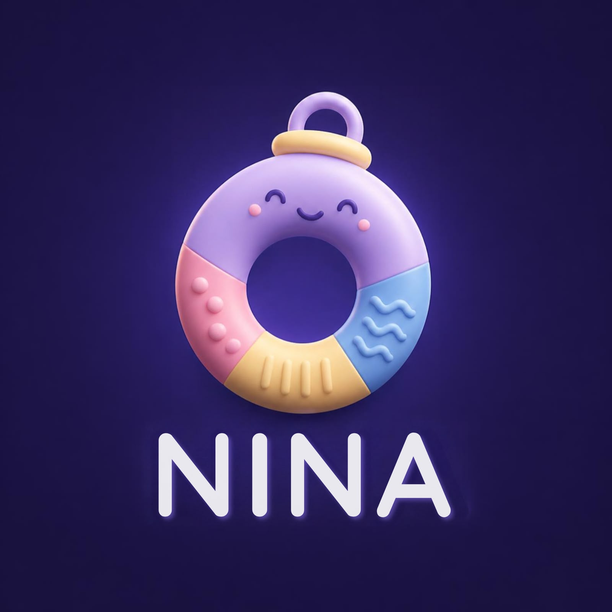
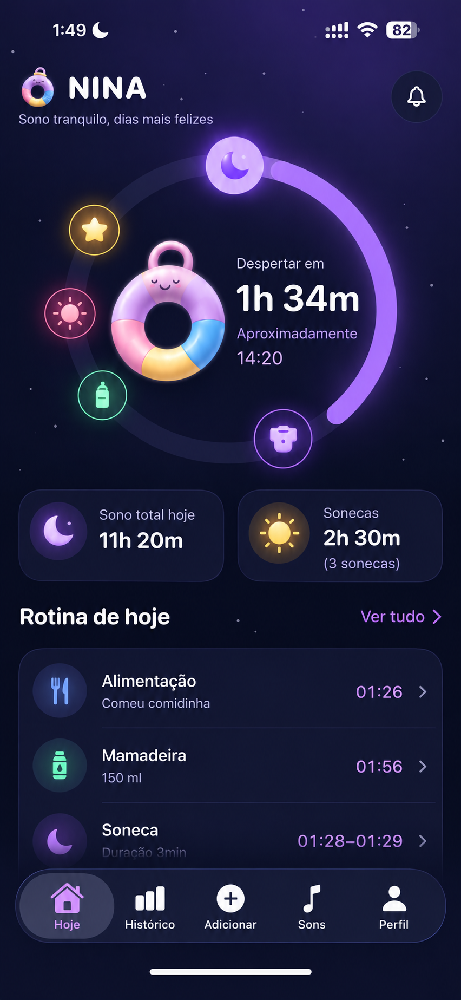
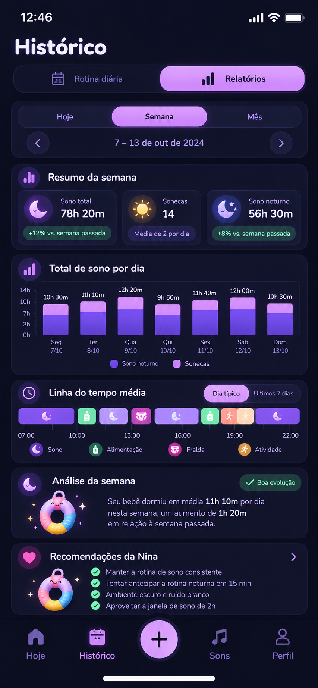
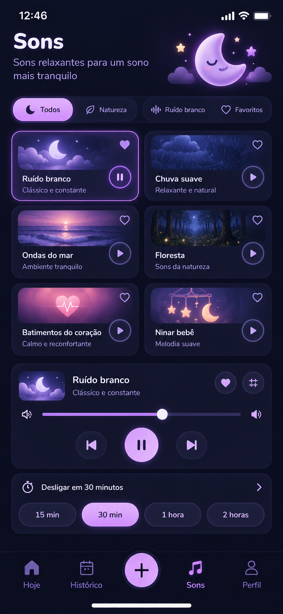

☁
Os soninhos mudam toda hora
Um dia funciona, no outro parece que nada dá certo. Fica difícil saber o que esperar.

Nina Quero conhecer a NinaEntenda os sinais do seu bebê, acompanhe os soninhos e encontre uma rotina que faça sentido para vocês — sem buscar perfeição.
Feita para acompanhar bebês de 2 a 36 meses

Você não precisa ter todas as respostas. Precisa de um jeito mais simples de entender o que está acontecendo.
Um dia funciona, no outro parece que nada dá certo. Fica difícil saber o que esperar.
Será que já está com sono? Será que passou do ponto? Tantas dúvidas cansam.
Mas cada bebê é único — e você também merece apoio enquanto aprende sobre o seu.

Relatórios e evolução
Sons para relaxarAcompanhe o sono, visualize os padrões da semana e use sons relaxantes para criar um ambiente mais tranquilo. A Nina reúne ferramentas práticas para ajudar você a entender a rotina do seu bebê.
Comece com o que você já sabe. A Nina ajuda a organizar o resto.
Compartilhe a idade, os desafios e o que você gostaria de melhorar na rotina.
Anote os horários e acompanhe os soninhos sem depender da memória.
Use o histórico e as estimativas como apoio para encontrar o ritmo de vocês.
Você não precisa de uma rotina perfeita. Precisa de uma rotina que funcione melhor para a sua família.
Esse é o jeito Nina de olhar para o sono.
Conheça a Nina e descubra como acompanhar o sono do seu bebê com mais clareza e acolhimento.
Quero começar com a Nina → Sem cobrança de perfeição. Só apoio para o dia a dia.Algumas respostas para você conhecer melhor a Nina.
A Nina foi pensada para famílias com bebês de 2 a 36 meses. As sugestões devem ser consideradas de acordo com a fase e as necessidades individuais de cada bebê.
Não. Cada bebê tem necessidades próprias e o sono pode variar por muitos motivos. A Nina ajuda você a registrar informações e observar padrões, mas não garante resultados específicos nem substitui orientação pediátrica.
Não. Estimativas e janelas de sono servem como referência, não como regras. Observe os sinais do seu bebê e adapte a rotina à realidade da sua família.
Toque no botão de início para acessar o fluxo de entrada da Nina. Antes de publicar, configure o link final do botão no arquivo script.js.
Não. A Nina é uma ferramenta de acompanhamento da rotina e não oferece diagnóstico ou atendimento médico. Em caso de dúvidas sobre a saúde ou o sono do bebê, converse com um profissional qualificado.